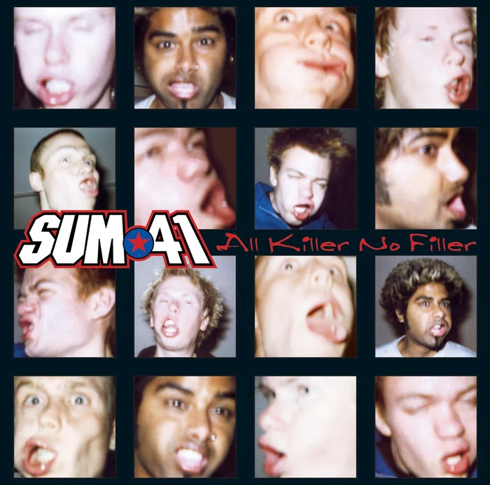

01 / 2801 / 28
Личная коллекция · выбор Ksury

01 / 2801 / 28
02 / Коллекция
Нажмите на обложку, чтобы поднять альбом на витрину.
Открываю музыкальную полку…
03 / Прослушивания
После подключения Spotify к Last.fm сервис собирает реальные прослушивания профиля @qKsury за период 1month. GitHub Actions обновляет статический файл раз в день.
Ключ API хранится только в GitHub Secrets и не попадает в код страницы. Пока подключение не настроено, список ниже остаётся явно отмеченным демо.